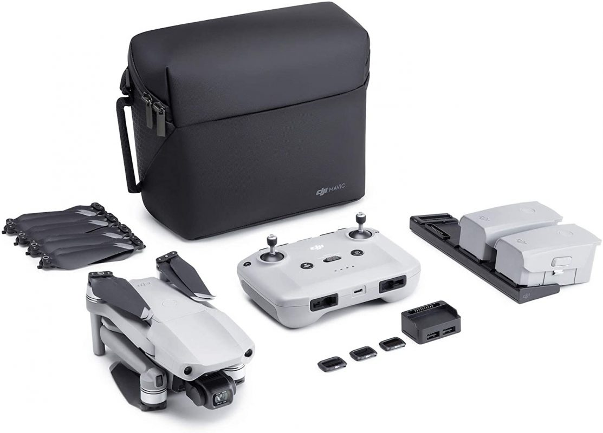
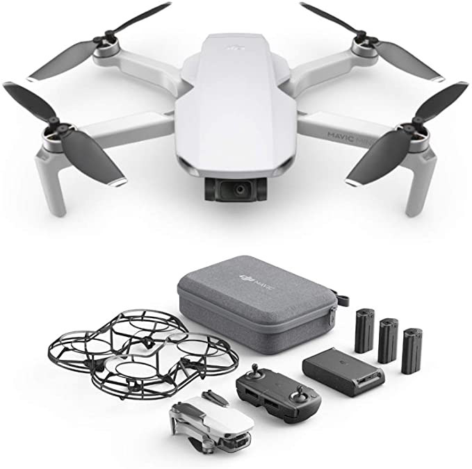

DJI Mavic Mini es un pequeño dron plegable capaz de sacar fotografías a 12 megapíxeles y vídeos a 2,7K. ... Hace un año del lanzamiento de los DJI Mavic 2 Pro y Mavic 2 Zoom, y tras una edición centrada en gobiernos y empresas ahora apuestan por un pequeño de uso algo más amateur y que sea fácil de pilotar.
| DJI Mini 2 | DJI Mini |
|---|---|
|  |  |